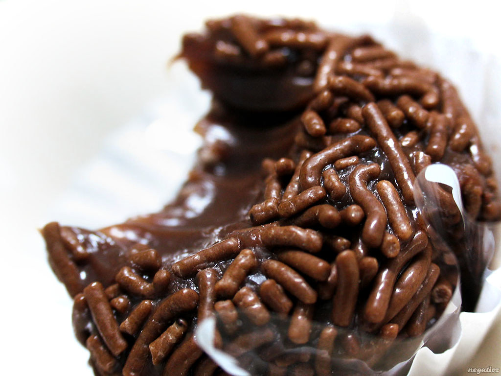

Receita de Brigadeiro de Colher
Voltar

Ingredientes:
- 1 lata de leite condensado
- 1 colher de sopa de manteiga
- 3 colheres de sopa de chocolate em pó
- Granulado para decorar (opcional)
Modo de Preparo:
- Misture os ingredientes: Em uma panela, junte o leite condensado, a manteiga e o chocolate em pó.
- Cozinhe: Leve ao fogo médio mexendo sem parar com uma colher de pau ou espátula.
- Dê o ponto: Cozinhe até começar a soltar do fundo da panela, mas ainda em ponto cremoso.
- Sirva: Desligue o fogo, espere esfriar um pouco, decore com granulado e sirva em potinhos.